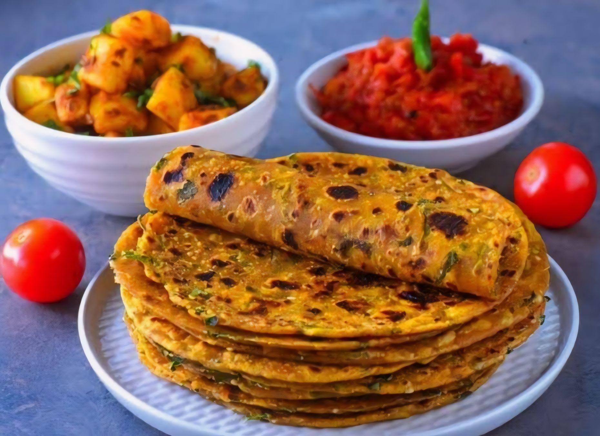

Thepala is a traditional Gujarati flatbread that is beloved for its delicious flavor and versatility. Made from whole wheat flour (atta) and flavored with fresh fenugreek leaves (methi) and spices, Thepala is a wholesome and nutritious dish enjoyed across Gujarat and beyond. Whether paired with yogurt, pickle, or enjoyed on its own, Thepala makes for a satisfying meal or snack at any time of the day. Follow this simple recipe to create your own batch of soft and flavorful Thepalas right in your kitchen.
Ingredients:
|
 |